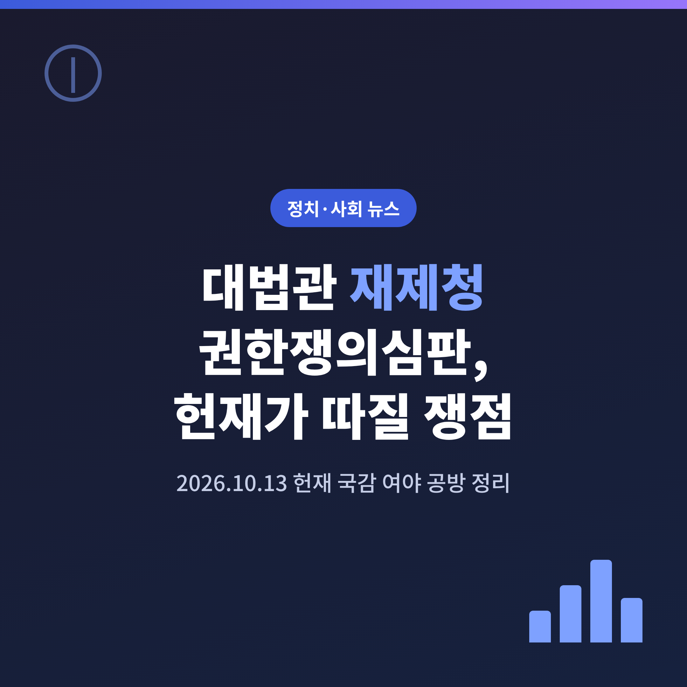
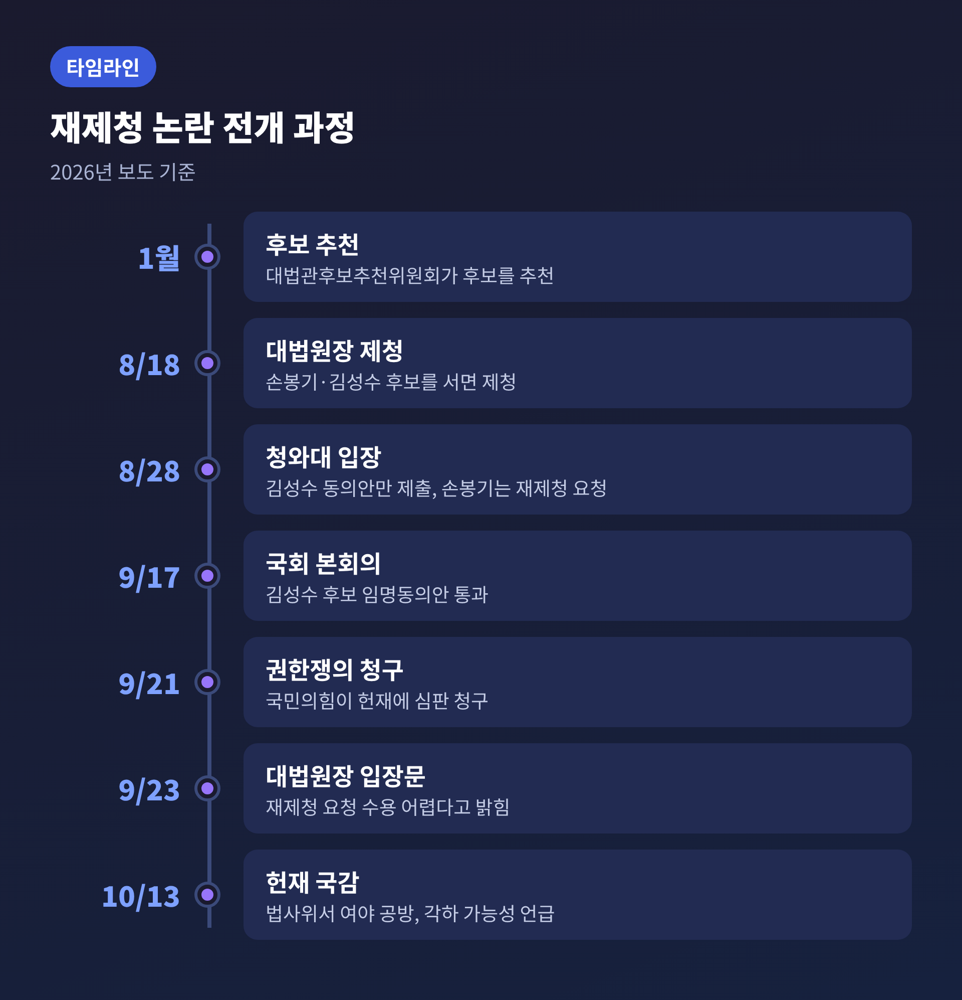
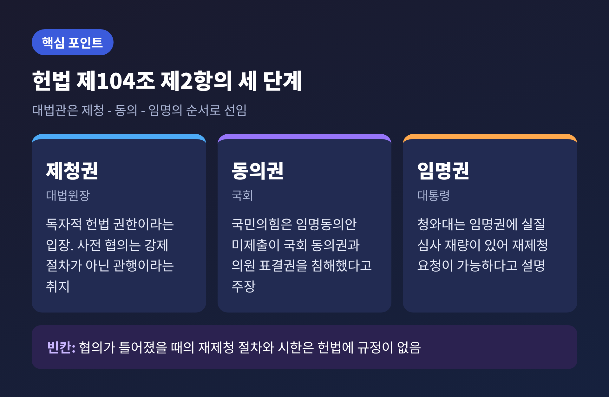
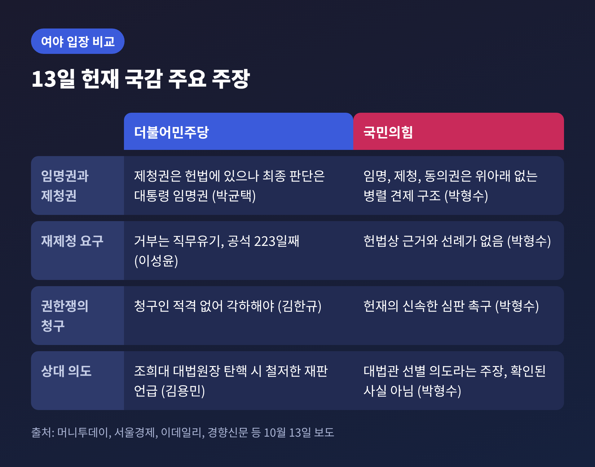
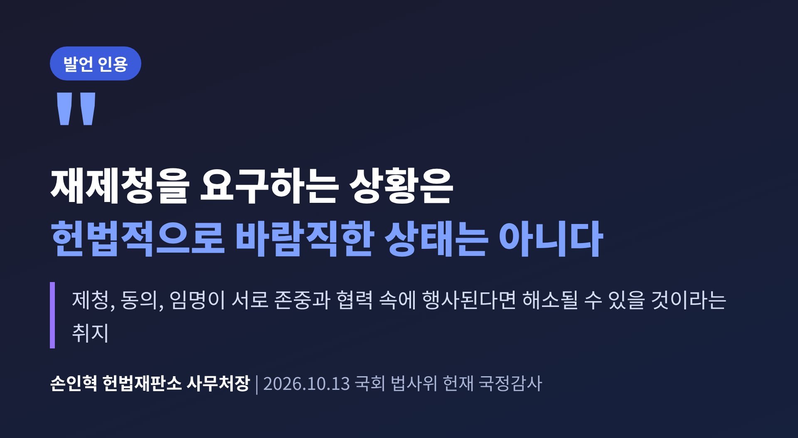
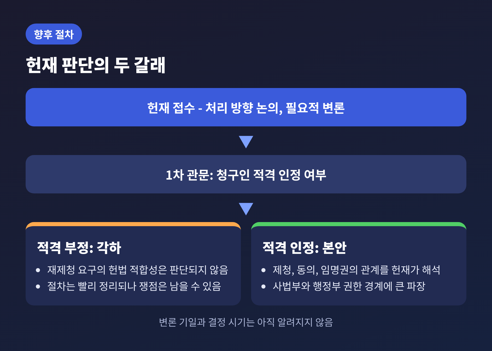

오늘은 대법관 후보자 재제청을 둘러싼 국민의힘의 권한쟁의심판 청구를 정리해 보려 합니다. 13일 열린 국회 법제사법위원회의 헌법재판소 국정감사에서 이 사건이 여야 충돌의 중심에 올랐습니다.
세 줄로 요약하면 이렇습니다.
이 글은 어느 쪽의 손도 들지 않고, 각자가 무엇을 주장하는지와 헌재가 무엇을 따지게 될지를 나누어 살펴봅니다. 인용한 발언은 모두 보도된 내용이며, 의원들의 의혹 제기는 '주장'으로 구분해 적었습니다.
사건의 출발점은 노태악 전 대법관의 후임 인선입니다. 대법관은 헌법 제104조 제2항에 따라 대법원장의 제청으로 국회 동의를 얻어 대통령이 임명합니다. 제청, 동의, 임명이라는 세 단계가 맞물리는 구조입니다.

경과는 보도 기준으로 다음과 같습니다.
서울경제는 대법관 임명 제청을 되돌려 보낸 것이 1958년 이승만 정부 이후 처음이라고 보도했습니다. 그만큼 전례가 드문 일입니다. 노태악 전 대법관의 자리는 이성윤 의원의 말을 빌리면 13일 기준 223일째 비어 있습니다.
청와대 강유정 수석대변인은 8월 28일 브리핑에서 몇 가지 이유를 들었습니다. 요지는 세 가지입니다.
첫째, 사전에 실질적인 협의 없이 이뤄진 '일방적 서면 제청'이어서 절차적 완결성이 부족하다는 것입니다.
둘째, 법원행정처가 제청 직전 추천된 후보들에게 추천 절차를 다시 진행하는 방안을 타진했고, 이것이 인사의 공정성에 대한 신뢰를 해쳤다는 것입니다.
셋째, 더 다양한 대법원 구성이라는 요구에 맞는지 의문이라는 것입니다.
청와대는 헌법 제104조 제2항을 근거로 제청과 임명은 별개의 권한이며, 재제청 요청은 대법원장의 권한을 제한하는 것이 아니라 상호 견제의 하나라고 설명했습니다. 법령에 재제청 절차가 없다는 지적에는, 임명권에 실질적 심사 재량이 포함돼 있다는 법률 검토를 내놓았다고 서울경제가 전했습니다.
조희대 대법원장은 9월 23일 입장문에서 제청 절차에 흠결이 있다는 주장은 헌법과 법률에 비추어 수긍하기 어렵다고 밝혔습니다. 청와대가 보낸 공문에 사유와 근거가 명확히 적혀 있지 않다는 점도 짚었습니다. 한편으로는 대법관 공백에 따른 국민 불편에 사과했습니다.
국민의힘의 청구는 이 지점에서 시작됩니다. 김태규 법률자문위원장 등이 9월 21일 오전 헌재에 청구서를 냈습니다. 청구 취지는 크게 세 가지입니다.
김 위원장은 대통령에게 후보를 고를 재량까지 인정하면 "사실상 대통령에게 대법관 후보자에 대한 거부권을 주는 것과 다름없다"고 주장했습니다. 손봉기 후보에게 법적 결격이나 중대한 제청 절차의 하자가 없다는 것이 국민의힘의 입장입니다.
눈여겨볼 대목이 있습니다. 국민의힘이 내세운 침해 권한은 대법원장의 제청권이 아니라 국회의 동의권과 의원의 심의·표결권입니다. 이 설계가 뒤에서 보듯 법적 쟁점의 핵심이 됩니다.

첫 번째는 청구인 적격입니다. 본안에 들어가기 전의 관문입니다.
권한쟁의심판은 청구인 자신의 권한이 침해됐거나 침해될 현저한 위험이 있어야 낼 수 있습니다. 데일리안이 인용한 법조인들의 설명을 보면 전망이 밝지만은 않습니다. 김소정 변호사는 국회 동의권은 국회라는 기관의 권한이어서 개별 의원의 심의·표결권 침해는 인정되기 어렵다고 보았습니다. 최건 변호사는 재제청 요구의 직접 당사자가 제청권을 가진 대법원장이어서, 국회가 침해를 주장하기 쉽지 않을 수 있다고 했습니다.
선례도 거론됩니다. 같은 기사는 정당은 권한쟁의의 당사자가 될 수 없다는 2020년 결정, 국회의원 121명의 청구를 비슷한 이유로 각하한 2015년 결정(2013헌라3)을 언급했습니다. 반대로 국회가 기관으로서 청구하면 인정될 여지가 있고, 2025년 헌법재판관 미임명 사건에서 헌재가 이를 인정한 바 있습니다. 다만 그 사건은 국회의 선출 절차가 끝난 뒤였다는 점에서 이번과 다르다고 기사는 정리했습니다.
두 번째는 본안, 곧 임명권과 제청권과 동의권의 관계입니다. 대통령이 제청된 후보의 동의안 제출을 거부하고 다시 제청하라고 요구할 수 있는지가 쟁점입니다. 헌법 제104조에는 협의가 결렬됐을 때의 재제청 절차나 시한이 적혀 있지 않습니다. 법의 빈칸에서 벌어진 다툼인 셈입니다.
세 번째는 긴 공석이 낳는 문제입니다. 이성윤 의원은 공석이 길어져 국민의 신속한 재판받을 권리가 침해되는 것 아니냐고 물었습니다. 이 부분은 권한쟁의의 직접 쟁점은 아니지만, 사건을 바라보는 정치적 무게를 키우고 있습니다.
13일 법사위의 헌재 국감에서는 손인혁 헌재 사무처장의 답변이 주목을 받았습니다. 사건이 계류 중이어서 신중하게 말했지만, 몇 가지는 분명하게 밝혔습니다.
여야는 같은 답변을 서로 다르게 활용했습니다.

더불어민주당 김한규 의원은 선례상 각하 사유가 분명하다며 "가능한 게 아니라 그렇게 해야 한다"고 정치적 고려 없는 신속한 처리를 요구했습니다. 박균택 의원은 제청권은 헌법에 규정돼 있지만 최종 판단은 대통령의 임명권에 있다고 보았습니다. 이성윤 의원은 공석 방치를 직무유기로 규정했고, 김용민 의원은 조 대법원장 탄핵으로 갈 경우 헌재가 철저히 재판해야 한다고 말했습니다.
국민의힘 박형수 의원은 재제청을 요구할 헌법상 근거와 선례가 없고, 제청·동의·임명권은 위아래가 아니라 서로 견제하는 병렬 구조라고 주장했습니다. 이 대통령의 선거법 사건이 파기환송된 점을 들어 자신의 재판을 맡을 대법관을 고르려는 '대법관 쇼핑'이라는 취지로 비판했는데, 이는 의원의 주장이며 확인된 사실은 아닙니다. 김태규 의원은 법률로 제청권을 제한할 수 있는지를 따져 물었고, 박 의원은 헌재의 신속한 심판도 촉구했습니다.
같은 답변이 두 갈래로 읽힌 셈입니다. 문언상 근거가 없다는 말은 국민의힘에게 힘이 되고, 각하도 가능하다는 말은 더불어민주당에게 힘이 됩니다.

이 사건은 한 사람의 인선 문제를 넘어섭니다. 대통령의 임명권이 얼마나 실질적인 심사를 포함하는지, 대법원장의 제청권이 어디까지 독자적인지를 묻고 있기 때문입니다. 청와대는 사전 협의 관행이 대법원이 한쪽 의사만으로 구성되는 것을 막아 왔다고 설명합니다. 반면 조 대법원장은 제청권이 대법원장의 독자적 권한이라는 입장이고, 국민의힘은 대통령이 후보를 거르는 권한을 갖게 되면 사법부 독립이 흔들린다고 우려합니다.
두 논리 모두 일리가 있고, 그래서 어렵습니다. 헌법은 제청과 임명과 동의의 순서만 정했을 뿐, 틀어졌을 때의 길은 알려 주지 않습니다. 법원 안에서도 의견이 갈립니다. 서울경제는 헌법이 사전 협의를 강제하지 않는다는 판사의 지적과, 제청 반려가 제청권을 무력화할 수 있다는 우려를 함께 전했습니다.
한계도 분명합니다. 이 글의 근거는 언론 보도입니다. 헌재의 내부 논의나 청구서의 전문, 청와대의 최근 입장은 확인하지 못했습니다.
헌재 사무처장에 따르면 권한쟁의심판은 필요적으로 변론을 거쳐야 합니다. 다만 변론 기일이나 결정 시기는 아직 알려지지 않았습니다. 가능한 길은 대체로 둘로 나뉩니다.

헌재 판단과 별개로 인선 자체를 풀 길도 있습니다. 서울경제는 추천위가 추천한 후보 중 손봉기 후보를 제외하면 김민기·박순영 서울고법 판사와 윤성식 서울고법 부장판사가 남는다고 전했습니다. 윤 부장판사는 내란전담재판부 재판장이 되어 사실상 제청이 어렵다는 분석도 함께 나왔습니다. 조 대법원장이 요구를 계속 거부하면 추천위를 다시 꾸려야 하고, 행정부와 사법부가 정면으로 부딪칠 수 있다는 관측입니다.
헌재 사무처장은 후보추천위 제도에 공백이나 불명확한 부분이 있으면 국회가 입법으로 메울 수 있다고도 했습니다. 판결 이전에 입법 논의가 먼저 움직일 가능성도 있다는 뜻입니다.
정리하면 이렇습니다.
이 사건에서 확정된 것은 많지 않습니다. 확정된 것은 청구가 접수됐다는 사실, 그리고 헌재가 각하 가능성을 포함해 신중히 보고 있다는 사실 정도입니다.
"누가 이기느냐보다, 헌법기관이 서로 어떻게 멈춰 서고 어떻게 풀어 가느냐가 남는 문제입니다."
헌재의 결정이 어느 쪽으로 나오든, 223일을 넘긴 빈자리를 누가 어떻게 채울지는 여전히 숙제로 남을 것입니다. 결정 일정이 공개되면 이어서 다시 정리해 보겠습니다.